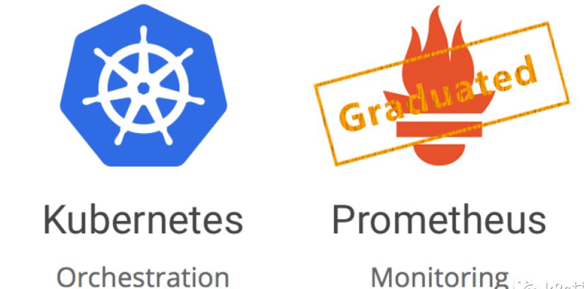
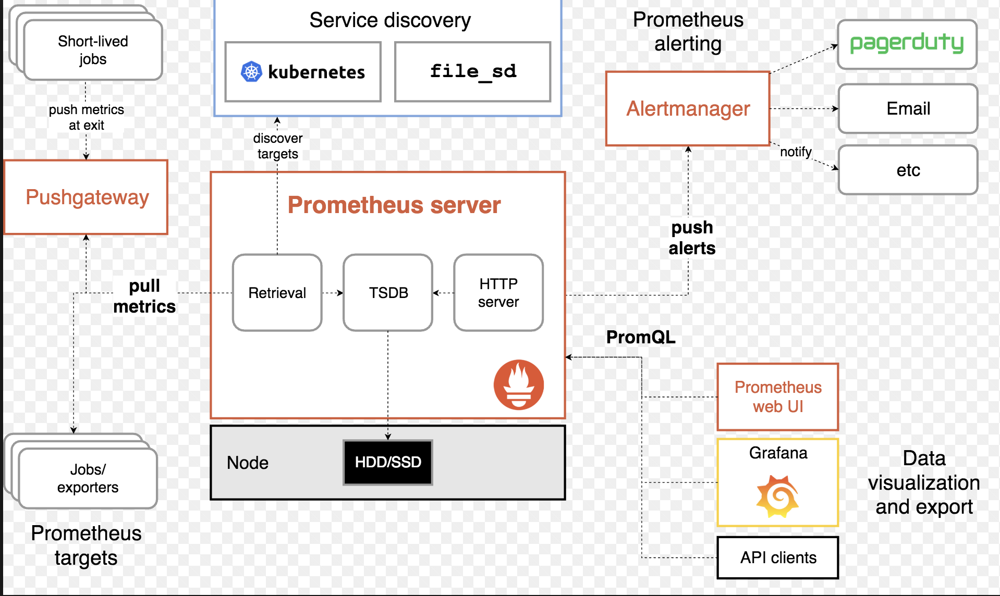
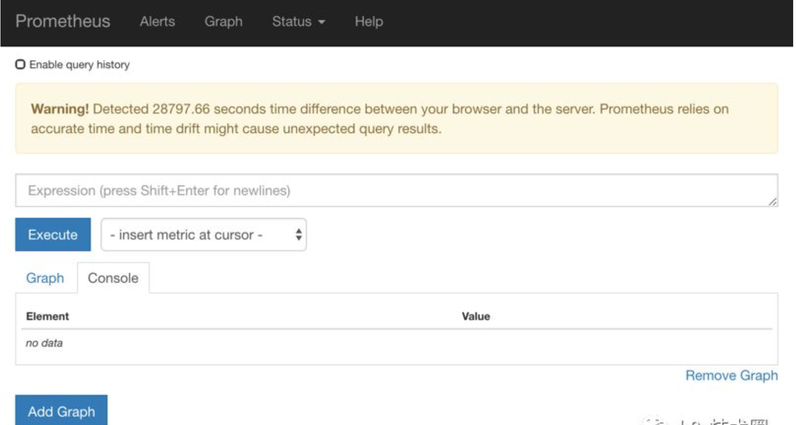
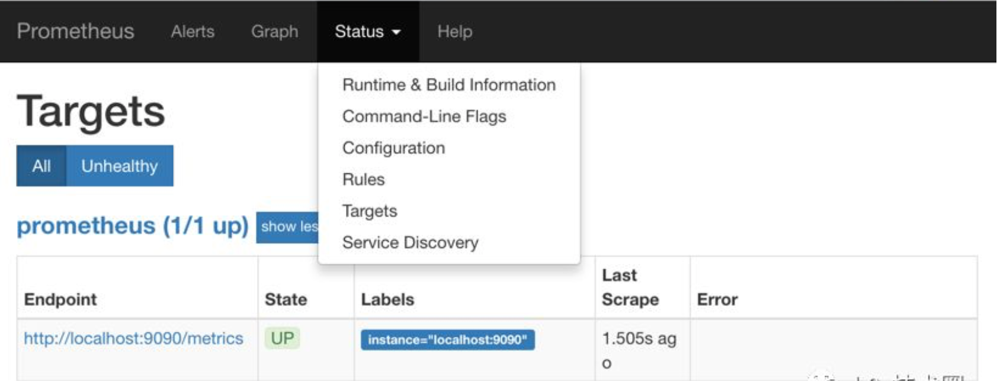
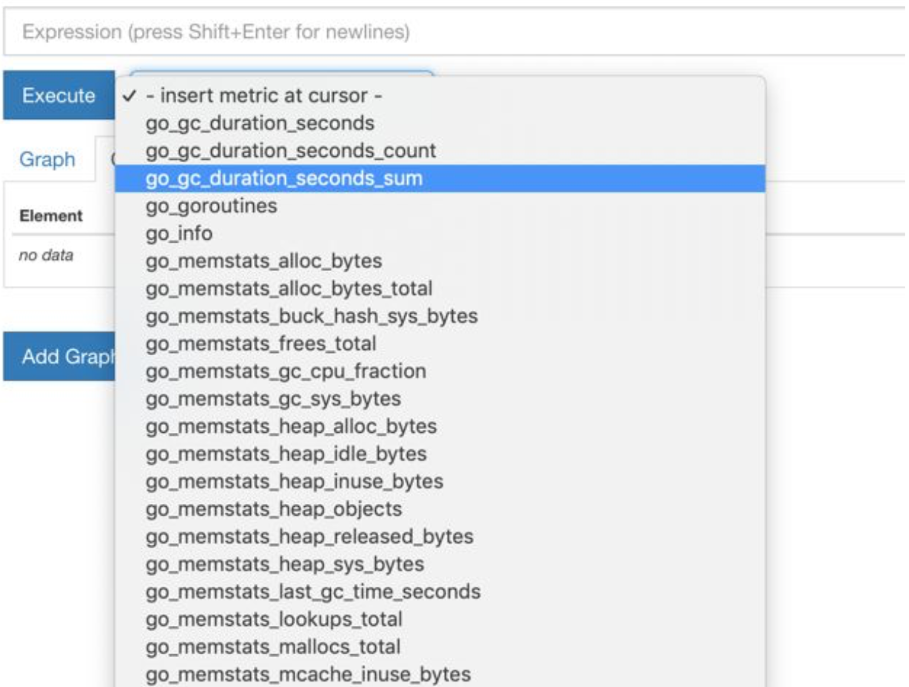
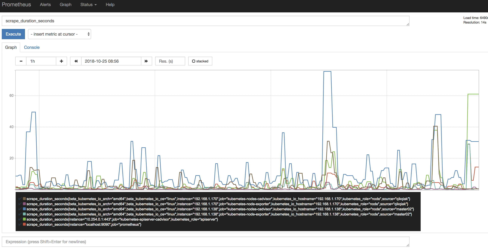

第四节 在 Kubernetes 中手动部署 Prometheus (adv)

在早期的版本中 Kubernetes 提供了 heapster、influxDB、grafana 的组合来监控系统，所以我们可以在 Dashboard 中看到 heapster 提供的一些图表信息，在后续的版本中会陆续移除掉 heapster，现在更加流行的监控工具是 prometheus，prometheus 是 Google 内部监控报警系统的开源版本，是 Google SRE思想在其内部不断完善的产物，它的存在是为了更快和高效的发现问题，快速的接入速度，简单灵活的配置都很好的解决了这一切，而且是已经毕业的 CNCF 项目。
1 简介
Prometheus 最初是 SoundCloud 构建的开源系统监控和报警工具，是一个独立的开源项目，于2016年加入了 CNCF 基金会，作为继 Kubernetes 之后的第二个托管项目。
2 特征
Prometheus 相比于其他传统监控工具主要有以下几个特点：
- 具有由
metric名称和键/值对标识的时间序列数据的多维数据模型 - 有一个灵活的查询语言
- 不依赖分布式存储，只和本地磁盘有关
- 通过
HTTP的服务拉取时间序列数据 - 也支持推送的方式来添加时间序列数据
- 还支持通过服务发现或静态配置发现目标
- 多种图形和仪表板支持
3 组件
Prometheus 由多个组件组成，但是其中许多组件是可选的
Prometheus Server：用于抓取指标、存储时间序列数据exporter：暴露指标让任务来抓pushgateway：push 的方式将指标数据推送到该网关alertmanager：处理报警的报警组件adhoc：用于数据查询
大多数 Prometheus 组件都是用 Go 编写的，因此很容易构建和部署为静态的二进制文件。
4 架构
下图是 Prometheus 官方提供的架构及其一些相关的生态系统组件：

整体流程比较简单，Prometheus 直接接收或者通过中间的 Pushgateway 网关被动获取指标数据，在本地存储所有的获取的指标数据，并对这些数据进行一些规则整理，用来生成一些聚合数据或者报警信息，Grafana 或者其他工具用来可视化这些数据。
5 安装
由于 Prometheus 是 Golang 编写的程序，所以要安装的话也非常简单，只需要将二进制文件下载下来直接执行即可，前往地址：https://prometheus.io/download 下载我们对应的版本即可。
Prometheus 是通过一个 YAML 配置文件来进行启动的，如果我们使用二进制的方式来启动的话，可以使用下面的命令：
$ ./prometheus --config.file=prometheus.yml
其中 prometheus.yml 文件的基本配置如下：
global:
scrape_interval: 15s
evaluation_interval: 15s
rule_files:
# - "first.rules"
# - "second.rules"
scrape_configs:
- job_name: prometheus
static_configs:
- targets: ['localhost:9090']
上面这个配置文件中包含了3个模块：global、rule_files 和 scrape_configs。
1.其中 global 模块控制 Prometheus Server 的全局配置：
scrape_interval：表示prometheus抓取指标数据的频率，默认是15s，我们可以覆盖这个值evaluation_interval：用来控制评估规则的频率，prometheus使用规则产生新的时间序列数据或者产生警报
2.rule_files 模块制定了规则所在的位置:
prometheus 可以根据这个配置加载规则，用于生成新的时间序列数据或者报警信息，当前我们没有配置任何规则。
3.scrape_configs 用于控制 prometheus 监控哪些资源。
- 由于
prometheus通过HTTP的方式来暴露的它本身的监控数据，prometheus也能够监控本身的健康情况。 - 在默认的配置里有一个单独的
job，叫做prometheus，它采集prometheus服务本身的时间序列数据。 - 这个 job 包含了一个单独的、静态配置的目标：监听
localhost上的9090端口。prometheus 默认会通过目标的/metrics路径采集metrics。所以，默认的 job 通过 URL：http://localhost:9090/metrics采集metrics。 - 收集到的时间序列包含
prometheus服务本身的状态和性能。如果我们还有其他的资源需要监控的话，直接配置在该模块下面就可以了。
由于我们这里是要跑在 Kubernetes 系统中，所以我们直接用 Docker 镜像的方式运行即可。
为了能够方便的管理配置文件，我们这里将 prometheus.yml 文件用 ConfigMap 的形式进行管理：（prometheus-cm.yaml）
apiVersion: v1
kind: ConfigMap
metadata:
name: prometheus-config
namespace: kube-ops
data:
prometheus.yml: |
global:
scrape_interval: 15s
scrape_timeout: 15s
scrape_configs:
- job_name: 'prometheus'
static_configs:
- targets: ['localhost:9090']
data:
prometheus.yml: |
gloabl:
scrape_configs:
我们这里暂时只配置了对 prometheus 的监控，然后创建该资源对象:
$ kubectl create -f prometheus-cm.yaml
configmap "prometheus-config" created
配置文件创建完成了，以后如果我们有新的资源需要被监控，我们只需要将上面的 ConfigMap 对象更新即可。现在我们来创建 prometheus 的 Pod 资源：(prometheus-deploy.yaml)
apiVersion: extensions/v1beta1
kind: Deployment
metadata:
name: prometheus
namespace: kube-ops
labels:
app: prometheus
spec:
template:
metadata:
labels:
app: prometheus
spec:
serviceAccountName: prometheus
containers:
- image: prom/prometheus:v2.4.3
name: prometheus
args:
- "--config.file=/etc/prometheus/prometheus.yml"
- "--storage.tsdb.path=/prometheus"
- "--storage.tsdb.retention=24h"
- "--web.enable-admin-api" # 控制对admin HTTP API的访问，其中包括删除时间序列等功能
- "--web.enable-lifecycle" # 支持热更新，直接执行localhost:9090/-/reload立即生效
ports:
- containerPort: 9090
protocol: TCP
name: http
volumeMounts:
- mountPath: "/prometheus"
subPath: prometheus
name: data
- mountPath: "/etc/prometheus"
name: config-volume
resources:
requests:
cpu: 100m
memory: 512Mi
limits:
cpu: 100m
memory: 512Mi
securityContext:
runAsUser: 0
volumes:
- name: data
persistentVolumeClaim:
claimName: prometheus
- configMap:
name: prometheus-config
name: config-volume
我们在启动程序的时候，除了指定了 prometheus.yml 文件之外，
- 还通过参数
storage.tsdb.path指定了TSDB数据的存储路径。 - 通过
storage.tsdb.retention设置了保留多长时间的数据。 - 还有下面的
web.enable-admin-api参数可以用来开启对admin api的访问权限。 - 参数
web.enable-lifecycle非常重要，用来开启支持热更新的，有了这个参数之后，prometheus.yml配置文件只要更新了，通过执行localhost:9090/-/reload就会立即生效，所以一定要加上这个参数。
我们这里将 prometheus.yml 文件对应的 ConfigMap 对象通过 volume 的形式挂载进了 Pod，这样 ConfigMap 更新后，对应的 Pod 里面的文件也会热更新的.
然后我们再执行上面的 reload 请求，Prometheus 配置就生效了。
除此之外，为了将时间序列数据进行持久化，我们将数据目录和一个 pvc 对象进行了绑定，所以我们需要提前创建好这个 pvc 对象：(prometheus-volume.yaml)
apiVersion: v1
kind: PersistentVolume
metadata:
name: prometheus
spec:
capacity:
storage: 10Gi
accessModes:
- ReadWriteOnce
persistentVolumeReclaimPolicy: Recycle
nfs:
server: 10.151.30.57
path: /data/k8s
---
apiVersion: v1
kind: PersistentVolumeClaim
metadata:
name: prometheus
namespace: kube-ops
spec:
accessModes:
- ReadWriteOnce
resources:
requests:
storage: 10Gi
我们这里简单的通过 NFS 作为存储后端创建一个 pv、pvc 对象：
$ kubectl create -f prometheus-volume.yaml
除了上面的注意事项外，我们这里还需要配置 rbac 认证，因为我们需要在 prometheus 中去访问 Kubernetes的相关信息，所以我们这里管理了一个名为 prometheus的 serviceAccount 对象：(prometheus-rbac.yaml)
apiVersion: v1
kind: ServiceAccount
metadata:
name: prometheus
namespace: kube-ops
---
apiVersion: rbac.authorization.k8s.io/v1
kind: ClusterRole
metadata:
name: prometheus
rules:
- apiGroups: [""]
resources:
- nodes
- services
- endpoints
- pods
- nodes/proxy
verbs: ["get", "list", "watch"]
- apiGroups: [""]
resources:
- configmaps
verbs: ["get"]
- nonResourceURLs: ["/metics"] # 对非资源型 endpoint metrics 进行 get 操作
verbs: ["get"]
---
apiVersion: rbac.authorization.k8s.io/v1beta1
kind: ClusterRoleBinding
metadata:
name: prometheus
roleRef:
apiGroup: rbac.authorization.k8s.io
kind: ClusterRole
name: prometheus
subjects:
- kind: ServiceAccount
name: prometheus
namespace: kube-ops
由于我们要获取的资源信息，在每一个 namespace 下面都有可能存在，所以我们这里使用的是 ClusterRole 的资源对象，值得一提的是我们这里的权限规则声明中有一个 nonResourceURLs的属性，是用来对非资源型 metrics 进行操作的权限声明，这个在以前我们很少遇到过，然后直接创建上面的资源对象即可：
$ kubectl create -f prometheus-rbac.yaml
serviceaccount "prometheus" created
clusterrole.rbac.authorization.k8s.io "prometheus" created
clusterrolebinding.rbac.authorization.k8s.io "prometheus" created
还有一个要注意的地方是我们这里必须要添加一个securityContext的属性在 prometheus deployment，将其中的runAsUser设置为0，这是因为现在的 prometheus 运行过程中使用的用户是 nobody，否则会出现下面的permission denied之类的权限错误：
level=error ts=2018-10-22T14:34:58.632016274Z caller=main.go:617 err="opening storage failed: lock DB directory: open /data/lock: permission denied
4.现在我们就可以添加promethues的资源对象了：
$ kubectl create -f prometheus-deploy.yaml
deployment.extensions "prometheus" created
$ kubectl get pods -n kube-ops
NAME READY STATUS RESTARTS AGE
prometheus-6dd775cbff-zb69l 1/1 Running 0 20m
$ kubectl logs -f prometheus-6dd775cbff-zb69l -n kube-ops......level=info ts=2018-10-22T14:44:40.535385503Z caller=main.go:523 msg="Server is ready to receive web requests."
Pod 创建成功后，为了能够在外部访问到 prometheus 的外部服务，我们还需要创建一个 Service 对象：(prometheus-svc.yaml)
apiVersion: v1
kind: Service
metadata:
name: prometheus
namespace: kube-ops
labels:
app: prometheus
spec:
selector:
app: prometheus
type: NodePort
ports:
- name: web
port: 9090
targetPort: http
为了方便测试，我们这里创建一个NodePort类型的服务，当然我们可以创建一个Ingress对象，通过域名来进行访问：
$ kubectl create -f prometheus-svc.yaml
service "prometheus" created
$ kubectl get svc -n kube-ops
NAME TYPE CLUSTER-IP EXTERNAL-IP PORT(S) AGE
prometheus NodePort 10.111.118.104 <none> 9090:30987/TCP 24s
然后我们就可以通过http://任意节点IP:30987访问 prometheus 的 外部服务了。

为了数据的一致性，prometheus 所有的数据都是使用的 UTC 时间，所以我们默认打开的 dashboard 中有这样一个警告，我们需要在查询的时候指定我们当前的时间才可以。然后我们可以查看当前监控系统中的一些监控目标

由于我们现在还没有配置任何的报警信息，所以 Alerts 菜单下面现在没有任何数据，隔一会儿，我们可以去 Graph 菜单下面查看我们抓取的 prometheus 本身的一些监控数据了，其中 insert metrics at cursor 下面就是我们搜集到的一些监控数据指标：

比如我们这里就选择 scrape_duration_seconds 这个指标，然后点击Execute，如果这个时候没有查询到任何数据，我们可以切换到Graph这个tab `下面重新选择下时间，选择到当前的时间点，重新执行，就可以看到类似于下面的图表数据了：

除了简单的直接使用采集到的一些监控指标数据之外，这个时候也可以使用强大的 PromQL 工具，PromQL其实就是 prometheus 便于数据聚合展示开发的一套 ad hoc 查询语言的，你想要查什么找对应函数取你的数据好了。